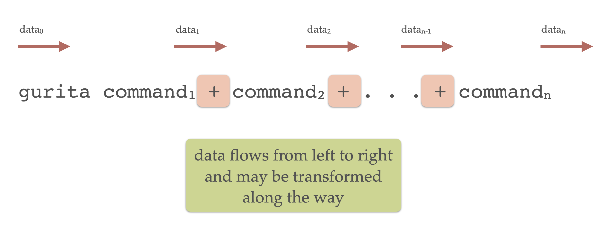

Command line syntax
Gurita provides a suite of commands, each carrying out a specific task.
Commands can be chained together in a modular fashion for more complex analysis pipelines.
Commands
Gurita commands have the following structure:
gurita <command> [arguments]
where <command> is the command name (e.g. hist or pca), and arguments is a list of options that control the behaviour of the command. In some cases the arguments can be empty.
See the list of commands for a summary of all the available commands.
Example command
For instance, the following invocation of Gurita will plot a histogram of the passengers column from the file flights.csv read from standard input:
gurita hist -x passengers < flights.csv
In the above example hist -x passengers is a single command. hist is the name of the command for plotting histograms, and -x passengers is an argument that tells the command to use the passengers column for the X axis. The notation < flights.csv redirects the contents of the flights.csv file into the standard input of Gurita. See the section on input and output for more information about input and output files.
The same outcome can be achieved equivalently by the following invocation:
cat flights.csv | gurita hist -x passengers
In the above example the contents of flights.csv is piped into the standard input of Gurita using the Unix pipe operator. Despite the different notation, this has the same effect as the previous example.
Types of commands
Commands fall into four types:
input/output: reading and writing data
plotting: visualising data as plots
transformation and analysis: manipulating and analysing data
summary information: getting an overview of data
Command chaining
In more complex cases mulitple commands can be chained together into a pipeline. Gurita uses the plus sign + to separate each command in the chain:
gurita <command_1> + <command_2> + ... + <command_n>
Each command has its own optional arguments, so the chaining syntax is more completely characterised as follows:
gurita <command_1> [arguments_1] + <command_2> [arguments_2] + ... + <command_n> [arguments_n]
The idea with command chaining is to build a pipeline of data transformation and/or plotting. This allows you to build complex analytics processes by joining commands together in sequence.
The most important detail about command chaining is that data flows from left to right in the chain, as illustrated in the following diagram:
Each command in the chain may transform the data before passing it along to the next command. Some commands, notably the plotting ones, pass the data along unchanged.
In the above diagram data0 is the initial input to the Gurita, data1 is the output from command1, and so on, and lastly, datan is the final output from the last command in the chain.
Note
Motivation for command chaining using +
The + operator in Gurita acts like the pipe operator | in the Unix shell. The main advantage of the + operator compared to | is that data is transferred between consecutive commands efficiently.
It is possible to join Gurita commands into a pipeline using the | shell operator, like so:
gurita <command_1> [arguments_1] | gurita <command_2> [arguments_2]
Note that this requires the Gurita program to be invoked multiple times in the same pipeline.
The main downside of using | pipelines is that it requires the entire dataset to be serialised into a text stream between each
command. This is redundant, inefficient, and therefore slow, particularly for large datasets.
The + operator lets you compose a pipeline using a single invocation of Gurita and, most importantly, data is passed between
successive commands in the chain efficiently. There is no serialisation to a text stream in between commands. Therefore using + will
be much faster than |, especially for complex pipelines and large datasets.
Command chaining example
The following is a more advanced example of command chaining in Gurita, consisting of four commands:
cat iris.csv | gurita filter 'species != "virginica"' \
+ sample 0.9 \
+ pca \
+ scatter -x pc1 -y pc2 --hue species
The above command is split over multiple lines for clarity, using the backslash \ to split lines.
Equivalently, the same command can be written in a single line, like so (where backslashes are no longer required):
cat iris.csv | gurita filter 'species != "virginica"' + sample 0.9 + pca + scatter -x pc1 -y pc2 --hue species
To understand how it works it is useful to break it down into parts.
To begin with, the contents of the file iris.csv is piped into the standard input of Gurita:
cat iris.csv | gurita ...
Note that input redirection would also achieve the same behaviour:
gurita ... < iris.csv
This data is then passed through the chain of commands from left to right. Along the way the data may be transformed, displayed or plotted.
The first command in the chain is a filter:
filter 'species != "virginica"'
The argument to filter is a logical expression that will typically refer to one or more columns of the data set. The filter command tests the condition on each row in the data set.
If the condition is true the row is retained, and if the condition is false the row is discarded. In this case the filter keeps only those
data rows where the value in the species column is not equal (!=) to virginica.
Note that the entire locial expression is written inside single quotes '...'. This ensures that the expression is treated as a single string.
In this example, the input to the filter command is the contents of
iris.csv and the output is a filtered version of the data set. Therefore the filter command transforms the data, and the transformed
data is fed into the next command in the chain, moving left to right.
The second command in the chain is a random sampling of the data:
sample 0.9
This randomly retains 90% (0.9) data rows from its input and discards the rest. Similar to filter, the sample command transforms the data, and the
transformed data is fed into the next command in the chain, moving left to right.
The net result of the two commands we have discussed so far is to remove all the data rows where species equals virginica, and then a random selection of
90% of those rows are kept (and thus 10% are removed).
The third command in the chain is a principal component analysis (PCA):
pca
This computes the first two (by default) principal components of its input data (considering only the numerical columns). Again, this is a transformation of
the data. The interesting thing about pca is that it retains all the data rows in the input and appends extra columns to each row. In this case
it adds columns called pc1 and pc2 representing the first two principal components. You can optionally request more principal components to be computed,
and in those cases more columns would be added, one for each component.
The fourth (and last) command in the chain creates a scatter plot:
scatter -x pc1 -y pc2 --hue species
The X and Y axes of the scatter plot are defined by the options -x pc1 -y pc2. Here you can see that the axes are defined to correspond to columns in the data. In this
case they are pc1 and pc2 respectively, which are new columns that were added to the data by the previous pca command. The option --hue species assigns colours
to points in the scatter plot based on the species categorical column. In this example
Gurita defaults to saving the plot in a file called scatter.pc1.pc2.species.png, however, as with all defaults, this can be overridden.
Note
There are a number of things to note about command chains:
Plotting and summary information commands do not modify the data. They simply perform their respective task on the current data set (such as making a plot) and then pass the same data along unchanged to the next command in the chain.
If the last command in a chain is a transformation Gurita will assume that you want the transformed data to be sent to the standard output, so it will do this automatically for you.
If the last command in a chain is a plotting command, then Gurita will assume that your primary goal was to generate the plot, and therefore it will not automatically send the data to the standard output at the end. You can override this behaviour by adding an explicit
outcommand at the end of the chain.You may have more than one plotting command in a chain.
Getting help
The -h or --help command line arguments give an overview of Gurita’s command line syntax:
gurita -h
Help information for each command can be requested with -h or --help
after the command name:
gurita <command> -h
For example, to get specific help about histograms, use:
gurita hist -h
This will display a detailed help message for the hist command, likewise for all other commands.
Version number
Gurita uses semantic versioning, such that its version number has three parts:
major.minor.patch
The major version number indicates significant changes in the behaviour and compatibility of the program. A change in major version number indicates that the different versions may not be entirely compatible with each other.
The minor version number indicates a change in functionality that is backwards compatible within the corresponding major version. For example, this could indicate the addition of a feature that was not previously present, but does not interfere with existing features.
The patch version number indicates a backwards compatible change that does not change functionality in a significant way. This is usually used for bug fixes.
The --version (-v) command line argument causes Gurita to print its version number.
gurita --version
gurita -v